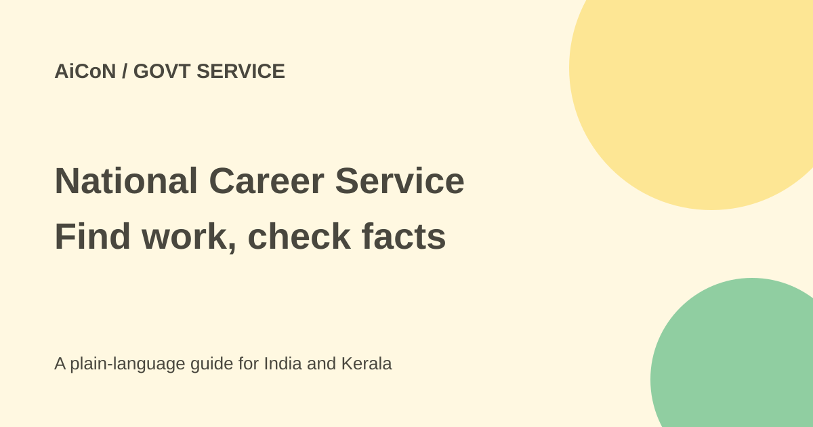

National Career Service: jobs, fairs and safer applications
National Career Service connects jobseekers with vacancies, job fairs and career support. Registration is not a job offer. Check the employer, vacancy and application rules before sharing documents.

What is NCS?
National Career Service is a Ministry of Labour and Employment service. Its portal brings together jobseekers, employers, counsellors, career centres and skill providers. It includes domestic job search, government-sector job links, job fairs, internships and career resources.
A listing on a government portal does not mean every vacancy is a government job. Look at the actual employer and recruitment notice. Private employers may have their own hiring process, while a government recruitment can require a separate application on its official site.
What can you use it for?
- Find vacancies matching your skills and location.
- Explore job fairs and events.
- Find career counsellors and career centres.
- Review internship, apprenticeship and skill-development information.
- Use official help when registration or the portal is unclear.
The current site also lists interview and career tools, but this guide did not activate them or establish separate eligibility for each feature. Start with the services relevant to your search rather than uploading everything at once.
How to start a job search
- Open the official NCS portal and choose the jobseeker route.
- Register through the current form and use your own mobile and email details. Verify account information yourself.
- Add truthful qualifications, skills and experience. Check spellings, dates and contact details.
- Search by job type, location and relevant skills. Read the full vacancy rather than only its title.
- Check age, education, experience, closing date, job location, salary and contract conditions.
- Verify the employer and use the stated application route. Keep the reference or confirmation.
- Check a job fair's venue, date, registration rules and required documents before travelling.
No account was registered or job application submitted for this guide. Exact menus can change, so follow the form currently shown.
Free services and practical costs
The government Indian Economic Service description calls NCS a free employment service and describes its beneficiary services as free. That does not make travel to an interview, mobile data or every external course or separate recruitment process free. If a vacancy requires an application fee, verify it against the actual recruiting organisation's official notice, not a message from a stranger.
No agent can guarantee selection merely because you registered on NCS. Do not pay a recruiter for a promised placement or share an OTP, UPI PIN or banking password. Be especially cautious about requests for a deposit to release an offer letter, salary or equipment.
Official help
The Directorate General of Employment identifies the multilingual NCS helpline as 1514, available Tuesday to Sunday from 8:00 AM to 8:00 PM. The live portal also displays 1514. Ask official support for portal issues instead of giving remote-control access to someone who calls you unexpectedly.
The site has a Blacklisted Entities section. Checking it can be useful, but an employer not appearing there is not proof of legitimacy. Independently verify the company, role and contact details.
For Kerala jobseekers
Search for realistic locations and commuting needs as well as qualifications. A role advertised elsewhere may not allow remote work from Kerala. Check whether pay is fixed, incentive-based or a mix, and whether an internship is paid. Do not assume an English or Malayalam job title establishes the working language.
Keep a clean resume and a private record of applications. Share identity or bank documents only when a verified recruitment step genuinely requires them. For overseas work, check the official international guidance and the recruiting channel rather than relying on an attractive salary screenshot.
What changed since the original post?
The 1 October post gave the portal, main services and 1514 hours. This guide adds the free-service distinction, private-versus-government vacancy checks and practical scam precautions. It makes no claim that registration guarantees employment.
Frequently asked questions
Is every listing a government job?
No. Verify the employer and recruitment notice.
Does registration guarantee a job?
No. Eligibility, applications and selection remain separate.
Can someone demand payment for certain selection?
Treat that as a warning sign. Verify through official channels before paying or sharing documents.
Was a vacancy checked for me?
No. This is a general portal guide, not a current shortlist or employer verification.
Sources: Official NCS portal · DGE service and helpline · Government free-service description. Checked 7 October 2026.